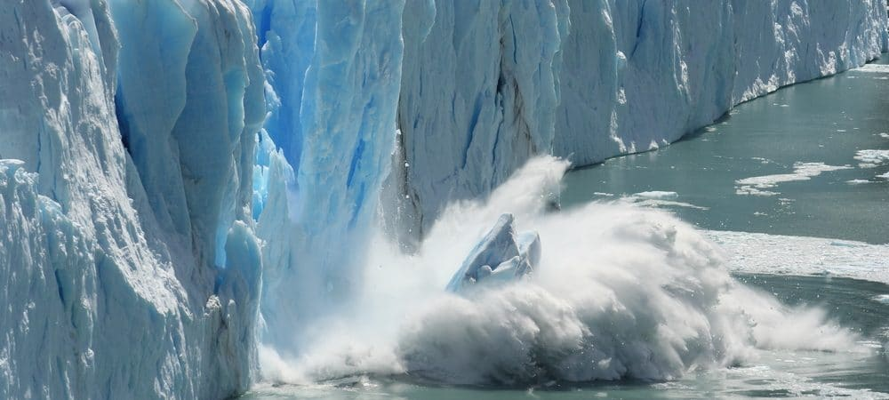
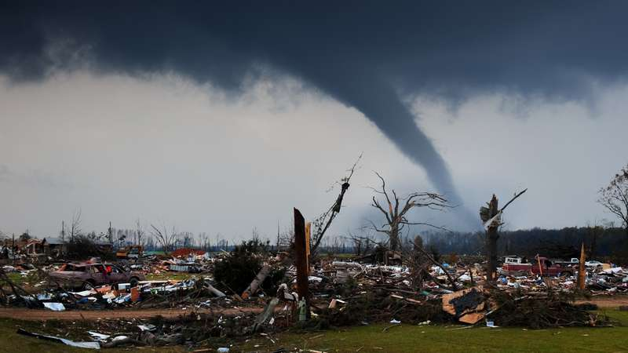
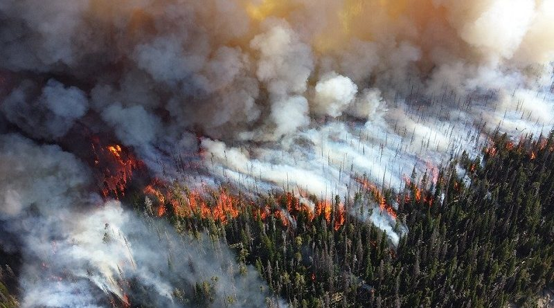
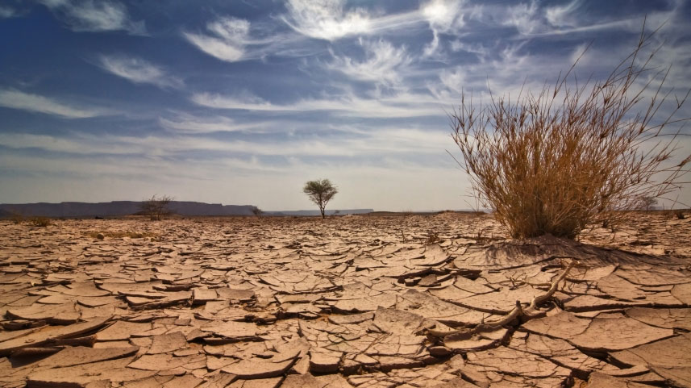
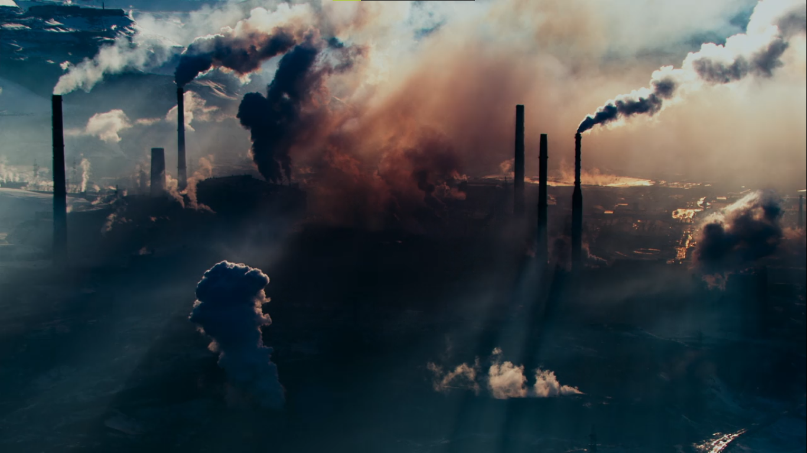

O aquecimento global é a intensificação do chamado efeito estufa. O efeito estufa é o responsável por manter a temperatura em níveis seguros para a manutenção da vida na Terra e corresponde a uma camada de gases que cobrem toda a superfície terrestre e que retém parte do calor proveniente do sol que é erradiado para o espaço. Ela impede que a temperatura terrestre baixe e é composta principalmente por gás carbônico (CO²), metano (CH4), óxido nitroso (N²O) e vapor de água. O problema se encontra no aumento desses gases do efeito estufa que acabam por impedir mais e mais que o calor da Terra seja erradiado, causando graves mudanças no clima global.
Os cientistas já observam que o aumento da temperatura média do planeta tem elevado o nível do mar devido ao derretimento das calotas polares, podendo ocasionar o desaparecimento de ilhas e cidades litorâneas densamente povoadas. Há também a previsão de uma frequência maior de eventos climáticos extremos (tempestades tropicais, inundações, ondas de calor, secas, nevascas, furacões, tornados e tsunamis) com graves consequências para populações humanas e ecossistemas naturais, podendo ocasionar a extinção de espécies de animais e de plantas.
   O Painel Intergovernamental de Mudanças Climáticas (IPCC), órgão das Nações Unidas, responsável por produzir informações científicas, afirma que há 90% de certeza que o aumento de temperatura na Terra está sendo causado pela ação do homem. A partir da Revolução Industrial o homem passou a emitir quantidades significativas de gases de efeito estufa (GEE), em especial o dióxido de carbono. Entre as principais atividades humanas que causam o aquecimento global e consequentemente as mudanças climáticas, a queima de combustíveis fósseis (derivados do petróleo, carvão mineral e gás natural) para geração de energia, atividades industriais e transportes; conversão do uso do solo; agropecuária; descarte de resíduos sólidos (lixo) e desmatamento. Todas estas atividades emitem grande quantidade de CO² e de gases formadores do efeito estufa.
O Acordo de Paris é um documento, assinado em 2015 por 195 países, que tem como objetivo principal a tomada de medidas para lidar com crise climática. Esse acordo firma o compromisso entre os países de lutar para que o aumento da temperatura média do planeta fique abaixo de 2 ºC como na época pré-industrial. Cada país participante construiu seus próprios compromissos com os quais deverão se atentar até que a crise climática seja controlada. No ranking dos países mais poluentes a China ocupa o primeiro lugar, seguido por Estados Unidos, União Europeia, Índia e pelo Brasil.
De acordo com o Fundo Mundial para a Natureza (WWF), existem várias maneiras de reduzir as emissões dos gases de efeito estufa e os efeitos no aquecimento global. Diminuir o desmatamento, investir no reflorestamento e na conservação de áreas naturais, incentivar o uso de energias renováveis não convencionais (solar, eólica, biomassa e Pequenas Centrais Hidrelétricas), preferir utilizar biocombustíveis (etanol, biodiesel) a combustíveis fósseis (gasolina, óleo diesel), investir na redução do consumo de energia e na eficiência energética, reduzir, reaproveitar e reciclar materiais, investir em tecnologias de baixo carbono, melhorar o transporte público com baixa emissão de GEE, são algumas das possibilidades. E estas medidas podem ser estabelecidas através de políticas nacionais e internacionais de clima.
SUGESTÃO DE ENTRETENIMENTO SOBRE O ASSUNTO: